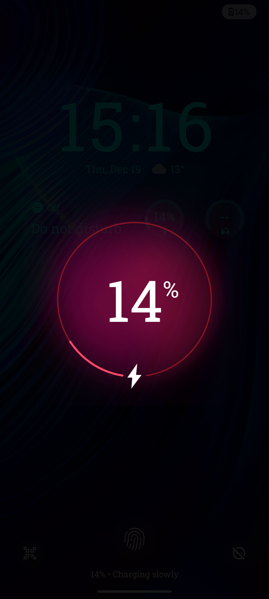

Akku
Der Akku des Motorola Edge 50 Ultra ist mit 4.500 mAh eine der größten Batterien in der aktuellen Smartphone-Generation. Hier sind einige Highlights:
- Laufzeit Der Akku bietet eine außergewöhnlich lange Laufzeit, sodass das Gerät auch bei intensiver Nutzung wie Gaming, Streaming oder Fotografie mehrere Tage ohne Aufladen durchhält.
- Schnellladen Das Gerät unterstützt eine ultraschnelle Ladefunktion, die den Akku in nur 18 Minuten zu 100% auflädt. Dies ermöglicht es, das Gerät schnell und einfach aufzuladen, wenn es mal schnell gehen muss.
- Engerieeffizienz Der Akku ist auch sehr energieeffizient, was bedeutet, dass er auch bei geringer Nutzung eine lange Laufzeit bietet und somit ideal für Menschen ist, die ihr Gerät nicht ständig benutzen.
- Wireless Chaging Das Gerät unterstützt außerdem Wireless Charging für Zeiten ohne Kabel
